ssg++ bileşenleri
Table of Contents
- ssg++ bileşenleri
- alanseçici
- apisink
- badilistesiknk
- başlıkfarkknk
- başlıkgirdileri
- başlıkknk
- başucuflt
- biriknk
- cümlelerdenkelimeağacı
- cümleleri
- debetocgzc
- dosyabtk
- dosyaknk
- favorileyenleri
- fork
- fork1x3
- fork1xn
- genelflt
- genelsıralayıcı
- girdibkzları
- girdiresimlerigzc
- gnd
- grafikbtk
- görselbtk
- hayvanknk
- histogram
- indeksknk
- intersection
- istatistikknk
- kümeflt
- limitflt
- maçsonucu
- merge
- merge3x1
- merge8x1
- mergenx1
- metinbtk
- takipknk
- tarihflt
- testbtk
- testcvt
- testknk
- wordlebtk
- yazarlistesiknk
ssg++ bileşenleri
Aşağıda ssg++ ve sacre için tanımlanmış, iş hattı oluştururken kullanabileceğiniz bileşenleri bulabilirsiniz. Kaynaklar iş hatlarının başlarında bulunan bileşenlerdir. Değişik sorgularla veri çekip iş hattının geri kalanını beslerler. Dönüştürücüler iş hatlarının ortalarında bulunan veri işleyip muhtemelen başka bir veri tipine sahip sonucu çıktı olarak üreten bileşenlerdir. Filtreler iş hatlarının ortalarında bulunan ve aynı tip girdi ve çıktı kapılarına sahip bileşenlerdir. İstenen özellikteki tokenleri geçirip geri kalanlarını yutarlar. Gözlemciler iş hatlarının ortalarında bulunan, girdi kapılarındaki veriyi aynen çıktı kapısına yazan bileşenlerdir. Dolayısıyla girdi ve çıktı kapıları aynı tiptedir. Üstlerinden geçen veriyi kullanarak bazı işler yaparlar. Bataklar iş hatlarının sonlarında bulunan bileşenlerdir. Ekrana/dosyaya/ağa yazma gibi işler yaparlar.
alanseçici
| Adı | alanseçici |
| İşlevi | Girdi kapısındaki tokenlerin parametre olarak verilen alanındaki değere sahip o alan tipinde yeni bir veri oluşturup çıktı kapısına gönderir. (Çıkış kapısı veri tipi aslında Token değil, seçilen alan tipindedir.) |
| Giriş Kapısı | 1 |
| alanseçici.inport1(token tipi: Token) | |
| Çıkış kapısı | 1 |
| alanseçici.outport1(token tipi: Token) |
Parametreleri:
| parametre | varsayılan değeri | açıklama | alabildiği değerler | önkoşulları |
|---|---|---|---|---|
| alan | yazar |
Girdi kapısındaki verilerin hangi alanının seçileceğini belirler. Girdi kapısındaki veri tipinin alanlarından biri. Örneğin, Girdi tipindeki veriler için alan şu değerleri alabilir: yazar, baslik, id, girdiSirasi, bkzBasliklari, gorunmezBkzBasliklari, disBaglantilar |
Görsel gösterimi:

apisink
| Adı | apisink |
| İşlevi | Geliştiricilerin işhattı sonuçlarını fonksiyon sonucu olarak almasını sağlar. Tip parametresi senkron olarak verildiğinde döndürülen sonuç apisink bileşenine giren tüm tokenlerin bir listesidir. Asenkron olarak verildiğinde öncesinde dinleyici olarak eklenmiş nesneler her yeni token geldiğinde ve iş hattı tamamlandığında haberdar edilir. |
| Giriş Kapısı | 1 |
| apisink.inport1(token tipi: Token) | |
| Çıkış kapısı | yok |
Parametreleri:
| parametre | varsayılan değeri | açıklama | alabildiği değerler | önkoşulları |
|---|---|---|---|---|
| tip | SYNCHRONOUS |
Sonuçların alınma şeklini belirler. | [senkron, asenkron] |
Görsel gösterimi:

badilistesiknk
| Adı | badilistesiknk |
| İşlevi | Giriş yapmış kullanıcının badi ya da troll olarak eklediği çıkış kapısına yazar. |
| Giriş Kapısı | yok |
| Çıkış kapısı | 1 |
| badilistesiknk.outport1(token tipi: Yazar) |
Parametreleri:
| parametre | varsayılan değeri | açıklama | alabildiği değerler | önkoşulları |
|---|---|---|---|---|
| tip | BADI |
Yazar listesi tipi. | [badi, troll] |
Görsel gösterimi:
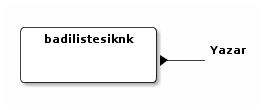
başlıkfarkknk
| Adı | başlıkfarkknk |
| İşlevi | Bugünün ya da badi başlıklarından daha önceki bir zamanda kaydedilmiş olanlardan farklı olanları listelemeye yarar. Çalıştırıldığında kaydedilen başlıkları da günceller. |
| Giriş Kapısı | yok |
| Çıkış kapısı | 1 |
| başlıkfarkknk.outport1(token tipi: Baslik) |
Parametreleri:
| parametre | varsayılan değeri | açıklama | alabildiği değerler | önkoşulları |
|---|---|---|---|---|
| dosya | cache/checkpoint-bugun-2015210.xml |
Başlıkların kaydedildiği dosya adı. | ||
| tip | BUGUN |
Fark alma işleminin yapılacağı liste tipi. | [bugün, badi, badifavorileri] |
Görsel gösterimi:
başlıkgirdileri
| Adı | başlıkgirdileri |
| İşlevi | Girdi kapısındaki başlığa ait girdileri çıktısında oluşturur. |
| Giriş Kapısı | 1 |
| başlıkgirdileri.inport1(token tipi: Baslik) | |
| Çıkış kapısı | 1 |
| başlıkgirdileri.outport1(token tipi: Entry) |
Parametreleri:
| parametre | varsayılan değeri | açıklama | alabildiği değerler | önkoşulları |
|---|---|---|---|---|
| ara | akilfikir |
Tip başlıktaara olarak seçilmişse, anahtar kelime(leri) içeren girdiler çıktıya yazılır. | ||
| sayfa | 1 |
Belirli bir sayfadan başlayarak girdileri indirmeye yarar. | ||
| başucu | false |
Yalnızca başucu girdileri çıktıya yazar. | [0, 1] | |
| tarih | yok |
Verilen tarihli girdileri çıktıya yazar. | ||
| limit | -1 |
Başlığa ait indirilecek girdi sayısı. Öntanımlı olarak limit yok. | ||
| tip | ~~ | Başlığa ait indirilen girdilerin filtrelenme şekli. Öntanımlı olarak filtresiz. | [hepsi, şükela, badi, tarih, başlıktaara] | |
| yeniden-eskiye | false |
Girdiler yeniden eskiye doğru çıktıya yazılır. | [0, 1] |
Görsel gösterimi:
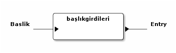
başlıkknk
| Adı | başlıkknk |
| İşlevi | Başlık tipinde veri oluşturmaya yarar. |
| Giriş Kapısı | yok |
| Çıkış kapısı | 1 |
| başlıkknk.outport1(token tipi: Baslik) |
Parametreleri:
| parametre | varsayılan değeri | açıklama | alabildiği değerler | önkoşulları |
|---|---|---|---|---|
| başlık | yok |
oluşturulmak istenen başlığın adı. | ||
| adres | yok |
başlığın adresi. (komut satırı kullanıcısı için önemli değil) | ||
| dosyadanbaşlık | yok |
bir temaya ait birden fazla başlığı çıktı kapısına yazmak için başlıkların listelendiği dosya adı. |
Önkoşulları:
- only one of the following should be true: başlık is set; dosyadanbaşlık is set
Görsel gösterimi:

başucuflt
| Adı | başucuflt |
| İşlevi | Girdileri boyutlarına göre filtrelemeye yarar. |
| Giriş Kapısı | 1 |
| başucuflt.inport1(token tipi: Entry) | |
| Çıkış kapısı | 1 |
| başucuflt.outport1(token tipi: Entry) |
Parametreleri:
| parametre | varsayılan değeri | açıklama | alabildiği değerler | önkoşulları |
|---|---|---|---|---|
| boyut | 1000 |
minimum girdi boyutu |
Görsel gösterimi:

biriknk
| Adı | biriknk |
| İşlevi | Yazarlar hakkında bilgi almaya yarar. |
| Giriş Kapısı | yok |
| Çıkış kapısı | 1 |
| biriknk.outport1(token tipi: Baslik) |
Parametreleri:
| parametre | varsayılan değeri | açıklama | alabildiği değerler | önkoşulları |
|---|---|---|---|---|
| sayfa | 1 |
Belirli bir sayfadan başlayarak başlıkları indirmeye yarar. | ||
| yazar | ekşisözlük |
Sorgulanan yazar. | ||
| limit | yok |
Başlığa ait indirilecek başlık sayısı. Başlık sayısını limitlemekten ziyade çekilecek sayfa sayısını limitlemek için kullanılıyor. Başlık sayısını limitlemek için limitflt bileşenini kullanabilirsiniz. Öntanımlı olarak limit yok. | ||
| tip | en-begenilenleri |
Sorgu tipi. | [son-girdileri, son-oylananları, dikkat-çekenleri, en-beğenilenleri, favorilenenleri, favorileri] |
Görsel gösterimi:
cümlelerdenkelimeağacı
| Adı | cümlelerdenkelimeağacı |
| İşlevi | Giriş kapısındaki cümlelerden kelime ağacı oluşturur. |
| Giriş Kapısı | 1 |
| cümlelerdenkelimeağacı.inport1(token tipi: TextToken) | |
| Çıkış kapısı | 1 |
| cümlelerdenkelimeağacı.outport1(token tipi: WordTreeData) |
Parametreleri:
| parametre | varsayılan değeri | açıklama | alabildiği değerler | önkoşulları |
|---|---|---|---|---|
| kök | (bkz |
Kelime ağacının kök kelimesi. | ||
| sade | false |
Sadece kök kelimeyi içeren cümleleri kullanmaya yarar. Büyük metinler için kullanılması gerekir. |
Görsel gösterimi:
cümleleri
| Adı | cümleleri |
| İşlevi | Giriş kapısındaki metni cümlelerine ayırarak çıkış kapısına yazar. |
| Giriş Kapısı | 1 |
| cümleleri.inport1(token tipi: Token) | |
| Çıkış kapısı | 1 |
| cümleleri.outport1(token tipi: TextToken) |
Parametreleri: yok
Görsel gösterimi:

debetocgzc
| Adı | debetocgzc |
| İşlevi | kindlegen ile debe için mobi oluştururken gerekli yardımcı dosyaları oluşturur. Girişteki tokenler aynen çıktıya yazılır. |
| Giriş Kapısı | 1 |
| debetocgzc.inport1(token tipi: Entry) | |
| Çıkış kapısı | 1 |
| debetocgzc.outport1(token tipi: Entry) |
Parametreleri: yok
Görsel gösterimi:
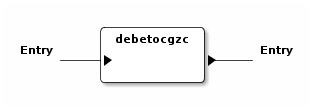
dosyabtk
| Adı | dosyabtk |
| İşlevi | Giriş kapısındaki veriyi txt, XML, csv ya da HTML biçiminde dosyaya yazar. |
| Giriş Kapısı | 1 |
| dosyabtk.inport1(token tipi: Token) | |
| Çıkış kapısı | yok |
Parametreleri:
| parametre | varsayılan değeri | açıklama | alabildiği değerler | önkoşulları |
|---|---|---|---|---|
| dosya | dosyabtk.xml |
Yazılmak istenen dosyanın yolu ve adı. | ||
| detaylı | true |
.htm ya da .html biçimli dosyaya yazılan durumlarda girdilerin sonuna başlığın ilk girdisi ve bakınız verilmiş girdilerin de eklenip eklenmeyeceğini belirler. | [0, 1] | at least one of the following should be true: biçim=htm; biçim=html; |
| biçim | xml |
dosya biçimi. (verilmesine gerek yok, dosyanın uzantısından elde ediliyor.) | [xml, txt, html, htm, csv] |
Görsel gösterimi:

dosyaknk
| Adı | dosyaknk |
| İşlevi | Verilen dosyadaki girdileri, başlıkları ya da metni çıkış kapısına yazar. |
| Giriş Kapısı | yok |
| Çıkış kapısı | 1 |
| dosyaknk.outport1(token tipi: Token) |
Parametreleri:
| parametre | varsayılan değeri | açıklama | alabildiği değerler | önkoşulları |
|---|---|---|---|---|
| dosya | dosyabtk.xml |
Okunmak istenen dosyanın adı. (dosya yolu da mutlak ya da göreceli olarak verilebilir.) | ||
| küçükharfli | false |
Txt biçimli dosyanın metnindeki tüm büyük harfleri küçük harfe dönüştürerek kullanmaya yarar. | [0, 1] | biçim=txt; |
| biçim | xml |
dosya biçimi. (verilmesine gerek yok, dosyanın uzantısından elde ediliyor.) | [xml, txt] |
Görsel gösterimi:

favorileyenleri
| Adı | favorileyenleri |
| İşlevi | Girdilerin favorileyenlerini listelemeye yarar. (Giriş kapısında tokenler Entry veya Başlık tipinde.) |
| Giriş Kapısı | 1 |
| favorileyenleri.inport1(token tipi: Token) | |
| Çıkış kapısı | 1 |
| favorileyenleri.outport1(token tipi: Yazar) |
Parametreleri:
| parametre | varsayılan değeri | açıklama | alabildiği değerler | önkoşulları |
|---|---|---|---|---|
| tip | TUMU |
Favorileyen yazar tipi. | [tümü, yazar, çaylak] |
Görsel gösterimi:
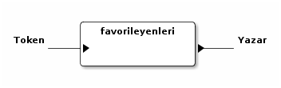
fork
| Adı | fork |
| İşlevi | no description given |
| Giriş Kapısı | 1 |
| fork.inport1(token tipi: Token) | |
| Çıkış kapısı | 2 |
| fork.outport1(token tipi: Token) | |
| fork.outport2(token tipi: Token) |
Parametreleri: yok
Görsel gösterimi:
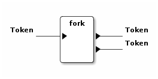
fork1x3
| Adı | fork1x3 |
| İşlevi | no description given |
| Giriş Kapısı | 1 |
| fork1x3.inport1(token tipi: Token) | |
| Çıkış kapısı | 3 |
| fork1x3.outport1(token tipi: Token) | |
| fork1x3.outport2(token tipi: Token) | |
| fork1x3.outport3(token tipi: Token) |
Parametreleri: yok
Görsel gösterimi:
fork1xn
| Adı | fork1xn |
| İşlevi | Girdi kapısındaki veriyi kopyalayarak her bir çıktı kapısına gönderir. |
| Giriş Kapısı | 1 |
| fork1xn.inport1(token tipi: Token) | |
| Çıkış kapısı | 2 |
| fork1xn.outport1(token tipi: Token) | |
| fork1xn.outport2(token tipi: Token) |
Parametreleri:
| parametre | varsayılan değeri | açıklama | alabildiği değerler | önkoşulları |
|---|---|---|---|---|
| n | 2 |
Çıkış kapısı adedi. |
Görsel gösterimi:
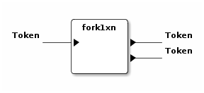
genelflt
| Adı | genelflt |
| İşlevi | Giriş kapısındaki tokenin alan parametresi ile verilen alanındaki değer, değer parametresi ile verilen değerle eşleşiyorsa çıktı kapısına geçirir, değilse yutar. eşleşme olan tokenlere eşleşmeyi sağlayan değer etiket olarak eklenir. |
| Giriş Kapısı | 1 |
| genelflt.inport1(token tipi: Token) | |
| Çıkış kapısı | 1 |
| genelflt.outport1(token tipi: Token) |
Parametreleri:
| parametre | varsayılan değeri | açıklama | alabildiği değerler | önkoşulları |
|---|---|---|---|---|
| alan | [yazar] |
filtreleme işleminde dikkate alınacak alan. Birden fazla alan aralarına artı (+) işareti konularak seçilebilir. örn. "alan=baslik+girdi" | ||
| eleme | UYMAYAN |
Tokenin verilen kriterlere uyduğu durumda mı yoksa uymadığı durumunda mı eleneceğini belirler. | [uyan, uymayan] | |
| değer | yok |
Filtreden geçebilecek tokenlerin alanlarında sahip olmaları gereken değer. asteriksler kullanılabilir. | dosyadandeğer is not set; | |
| benzerlik | AYNISI |
varsayılan değeri seçilen alana göre değişiyor. baslik ve yazar için aynısı, girdi için ayrık değerlerini alır. aynısı: tokenin alanın değerinin parametre olarak verilen değerle/değerlerle aynı olduğu durumda geçirilmesini sağlar (örn. 'beşiktaş' sadece 'beşiktaş'a eşlenebilir). sonuekli: alan değerinin metni içinde eşleştirme yapıp, eşlemenin sonunda verilen değer parametresinden fazla karakter olması durumda da geçirilmesini sağlar (örn. beşik beşiktaş'la eşleştirilebilir). başısonuekli: alan değerinin metni içinde eşleştirme yapıp, eşleşmenin başında ya da sonunda verilen değer parametresinden fazla karakter olması durumda geçirilmesini sağlar (örn. eşik beşiktaş'la eşleştirilebilir). ayrık: alan değerinin metni içinde eşleştirme yapıp, eşleşmenin başında boşluk, sonunda da boşluk ya da noktalama işaretleri olması durumda geçirilmesini sağlar (örn. 'beşiktaş' 'beşiktaş gibi' ile eşlenebilir ama 'beşiktaşlı' ile eşlenmez). | [aynısı, sonuekli, başısonuekli, ayrık] | |
| dosyadandeğer | yok |
Birden fazla değer parametresi geçirmek için bir tema dosyası verilebilir. | değer is not set; |
Önkoşulları:
- only one of the following should be true: değer is set; dosyadandeğer is set
Görsel gösterimi:
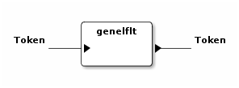
genelsıralayıcı
| Adı | genelsıralayıcı |
| İşlevi | Giriş kapısındaki tokenleri verilen bir alanın değerlerine göre sıralayarak çıkış kapısına yazar. |
| Giriş Kapısı | 1 |
| genelsıralayıcı.inport1(token tipi: Token) | |
| Çıkış kapısı | 1 |
| genelsıralayıcı.outport1(token tipi: Token) |
Parametreleri:
| parametre | varsayılan değeri | açıklama | alabildiği değerler | önkoşulları |
|---|---|---|---|---|
| alan | baslikGirdiSayisi |
Sıralama için kullanılan alan. |
Görsel gösterimi:
girdibkzları
| Adı | girdibkzları |
| İşlevi | Girdi kapısındaki girdinin bkz ve görünmez bkz verilmiş başlıklarını çıktı kapısına yazar. |
| Giriş Kapısı | 1 |
| girdibkzları.inport1(token tipi: Entry) | |
| Çıkış kapısı | 1 |
| girdibkzları.outport1(token tipi: Baslik) |
Parametreleri: yok
Görsel gösterimi:
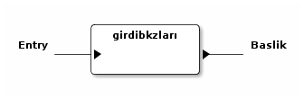
girdiresimlerigzc
| Adı | girdiresimlerigzc |
| İşlevi | Giriş kapısındaki girdinin içindeki resimlere verilmiş bağlantılardaki resimleri, twitter/facebook bağlantılarındaki durum bilgisi ve varsa resimleri mevcut klasöre indirir. Tanımlı resim dosyası uzantıları: .jpg, .gif, .png, .flv. İndirilen dosya başlık adı - girdi numarası - resmin orjinal adı şeklinde isimlendirilir. Twitter durumu tvit-tvit\no.xml, varsa resmi tvit-tvit\no dosyasına kaydedilir. |
| Giriş Kapısı | 1 |
| girdiresimlerigzc.inport1(token tipi: Entry) | |
| Çıkış kapısı | 1 |
| girdiresimlerigzc.outport1(token tipi: Entry) |
Parametreleri: yok
Görsel gösterimi:
gnd
| Adı | gnd |
| İşlevi | Girdi kapısındaki verileri alır ve onlarla hiçbir şey yapmaz. |
| Giriş Kapısı | 1 |
| gnd.inport1(token tipi: Token) | |
| Çıkış kapısı | yok |
Parametreleri: yok
Görsel gösterimi:
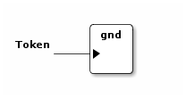
grafikbtk
| Adı | grafikbtk |
| İşlevi | Giriş kapısındaki grafik verisini sütunlu grafik olarak gösterir. |
| Giriş Kapısı | 1 |
| grafikbtk.inport1(token tipi: ChartData) | |
| Çıkış kapısı | yok |
Parametreleri: yok
Görsel gösterimi:

görselbtk
| Adı | görselbtk |
| İşlevi | Swing arayüzü sağlar. (Kullanımdan kalktı.) |
| Giriş Kapısı | 1 |
| görselbtk.inport1(token tipi: Token) | |
| Çıkış kapısı | yok |
Parametreleri: yok
Görsel gösterimi:

hayvanknk
| Adı | hayvanknk |
| İşlevi | Ekşi Sözlük'teki hayvan ara formunun sağladığı şekilde arama yapılmasını sağlar. |
| Giriş Kapısı | yok |
| Çıkış kapısı | 1 |
| hayvanknk.outport1(token tipi: Baslik) |
Parametreleri:
| parametre | varsayılan değeri | açıklama | alabildiği değerler | önkoşulları |
|---|---|---|---|---|
| baş | yok |
Başlangıç tarihi | ||
| sıralama | Date |
Giriş zamanına göre, alfabetik olarak ya da en çok girdi yapılan başlığa göre sıralar. | [yeni-eski, alfa-beta, gudik] | |
| son | yok |
Bitiş tarihi | ||
| sayfa | 1 |
Belirli bir sayfadan başlayarak başlıkları indirmeye yarar. | ||
| yazar | yok |
Verilen yazara ait başlıkları buldurur. | ||
| şey | yok |
verilen kelimeleri içeren başlıkları arar. '*' kullanılabilir. | ||
| limit | yok |
Başlığa ait indirilecek başlık sayısı. Başlık sayısını limitlemekten ziyade çekilecek sayfa sayısını limitlemek için kullanılıyor. Başlık sayısını limitlemek için limitflt bileşenini kullanabilirsiniz. Öntanımlı olarak limit yok. | ||
| güzelinden | false |
Güzel girdileri olan başlıkları buldurur. | [0, 1] |
Görsel gösterimi:
histogram
| Adı | histogram |
| İşlevi | Kategori zaman olarak seçilmişse girdi kapısındaki girdilerin sayılarını parametre olarak verilen zaman çözünürlüğüne (yıl, ay, hafta, gün) göre grafik verisi haline getirir. kategori yazar/başlık olarak seçilmişse yazarına/başlığına göre girdileri sayarak grafik verisi oluşturur. Girdi kapısındaki veri tipi Başlık ise verilen parametreler dikkate alınmaz histogram başlık kategorisine göre çıkarılır. (Girdi ya da Başlık tipli token kullanabilir.) |
| Giriş Kapısı | 1 |
| histogram.inport1(token tipi: Token) | |
| Çıkış kapısı | 1 |
| histogram.outport1(token tipi: ChartData) |
Parametreleri:
| parametre | varsayılan değeri | açıklama | alabildiği değerler | önkoşulları |
|---|---|---|---|---|
| eksen | kategori |
Girdilerin gruplandırılacağı eksenin tipini belirler. kategori: bir başka parametre ile verilecek olan kategori tipine göre grafik verisi oluşturur. zaman: girdileri giriş zamanlarına göre grafik verisi oluşturur. | [kategori, zaman] | |
| kategori | yazar |
Yalnızca eksen olarak kategori seçilmişse kullanılabilir, kategori tipini belirler. yazar: girdileri yazarlarına göre sayarak grafik verisi oluşturur. başlık: girdileri başlıklarına göre sayarak zaman bilgisi oluşturur vb. Etiket kategorisi ile tokenlerdeki etiketlere gruplama ve sayma yapılır. | [yazar, başlık, girdisırası, favorisayısı, etiket] | eksen=kategori; |
| çözünürlük | ay |
yalnızca eksen olarak zaman seçilmişse kullanılabilir. zamana bağlı veriyi seçilen çözünürlükte gruplayıp toplayarak grafik verisi oluşturur. | [yıl, ay, gün, saat] | eksen=zaman; |
Görsel gösterimi:

indeksknk
| Adı | indeksknk |
| İşlevi | Seçilen bir tipe göre sol başlık akışındaki başlıkları listeler. |
| Giriş Kapısı | yok |
| Çıkış kapısı | 1 |
| indeksknk.outport1(token tipi: Baslik) |
Parametreleri:
| parametre | varsayılan değeri | açıklama | alabildiği değerler | önkoşulları |
|---|---|---|---|---|
| kanal | sinema |
Tip olarak kanal seçilmişse, başlıkları listelenmek istenen kanal | [sinema, siyaset, müzik, bilim, spor, edebiyat, ilişkiler, tarih, teknoloji, sanat, tv, oyun, anket, meta, programlama, sağlık] | |
| sayfa | 1 |
Belirli bir sayfadan başlayarak başlıkları indirmeye yarar. | ||
| limit | yok |
Başlığa ait indirilecek başlık sayısı. Başlık sayısını limitlemekten ziyade çekilecek sayfa sayısını limitlemek için kullanılıyor. Başlık sayısını limitlemek için limitflt bileşenini kullanabilirsiniz. Öntanımlı olarak limit yok. | ||
| tip | today |
listelemede kullanılacak tip | [bugün, popüler, badi, badifav, son, kenar, olay, çaylaklar, kanal] |
Görsel gösterimi:
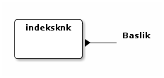
intersection
| Adı | intersection |
| İşlevi | İki girdi kapısındaki verilerin kesişim kümesini çıktı kapısına gönderir. |
| Giriş Kapısı | 2 |
| intersection.inport1(token tipi: Token) | |
| intersection.inport2(token tipi: Token) | |
| Çıkış kapısı | 1 |
| intersection.outport1(token tipi: Token) |
Parametreleri: yok
Görsel gösterimi:
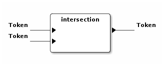
istatistikknk
| Adı | istatistikknk |
| İşlevi | Geçen haftanın veya dünün en beğenilen girdilerini listeler. |
| Giriş Kapısı | yok |
| Çıkış kapısı | 1 |
| istatistikknk.outport1(token tipi: Baslik) |
Parametreleri:
| parametre | varsayılan değeri | açıklama | alabildiği değerler | önkoşulları |
|---|---|---|---|---|
| tip | istatistik/gecen-haftanin-en-begenilen-entryleri |
Dünün en beğenilen ya da geçen haftanın en beğenilen girdileri | [debe, ghebe] |
Görsel gösterimi:
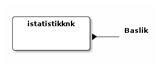
kümeflt
| Adı | kümeflt |
| İşlevi | Giriş kapısındaki token listesini küme olarak çıktısına yazar, diğer bir deyişle yinelenen tokenler çıktıya yazılmaz. |
| Giriş Kapısı | 1 |
| kümeflt.inport1(token tipi: Token) | |
| Çıkış kapısı | 1 |
| kümeflt.outport1(token tipi: Token) |
Parametreleri: yok
Görsel gösterimi:

limitflt
| Adı | limitflt |
| İşlevi | Yalnızca limit parametresi ile verilen sayıdaki tokeni girdi kapısından çıktı kapısına geçirir. |
| Giriş Kapısı | 1 |
| limitflt.inport1(token tipi: Token) | |
| Çıkış kapısı | 1 |
| limitflt.outport1(token tipi: Token) |
Parametreleri:
| parametre | varsayılan değeri | açıklama | alabildiği değerler | önkoşulları |
|---|---|---|---|---|
| limit | 1 |
Geçirilecek en fazla token sayısını belirler. |
Görsel gösterimi:

maçsonucu
| Adı | maçsonucu |
| İşlevi | Giriş kapısındaki girdinin içinde skor geçen cümleleri çıktı kapısına yazar. aralarında tire olan üçe kadar hanesi olan iki sayıyı skor olarak algılanır. |
| Giriş Kapısı | 1 |
| maçsonucu.inport1(token tipi: Entry) | |
| Çıkış kapısı | 1 |
| maçsonucu.outport1(token tipi: TextToken) |
Parametreleri: yok
Görsel gösterimi:

merge
| Adı | merge |
| İşlevi | no description given |
| Giriş Kapısı | 2 |
| merge.inport1(token tipi: Token) | |
| merge.inport2(token tipi: Token) | |
| Çıkış kapısı | 1 |
| merge.outport1(token tipi: Token) |
Parametreleri: yok
Görsel gösterimi:
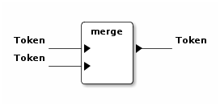
merge3x1
| Adı | merge3x1 |
| İşlevi | no description given |
| Giriş Kapısı | 3 |
| merge3x1.inport1(token tipi: Token) | |
| merge3x1.inport2(token tipi: Token) | |
| merge3x1.inport3(token tipi: Token) | |
| Çıkış kapısı | 1 |
| merge3x1.outport1(token tipi: Token) |
Parametreleri: yok
Görsel gösterimi:
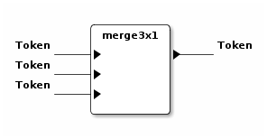
merge8x1
| Adı | merge8x1 |
| İşlevi | no description given |
| Giriş Kapısı | 8 |
| merge8x1.inport1(token tipi: Token) | |
| merge8x1.inport2(token tipi: Token) | |
| merge8x1.inport3(token tipi: Token) | |
| merge8x1.inport4(token tipi: Token) | |
| merge8x1.inport5(token tipi: Token) | |
| merge8x1.inport6(token tipi: Token) | |
| merge8x1.inport7(token tipi: Token) | |
| merge8x1.inport8(token tipi: Token) | |
| Çıkış kapısı | 1 |
| merge8x1.outport1(token tipi: Token) |
Parametreleri: yok
Görsel gösterimi:
mergenx1
| Adı | mergenx1 |
| İşlevi | Giriş kapılarındaki tokenleri tek bir çıkış kapısına gönderir. |
| Giriş Kapısı | 2 |
| mergenx1.inport1(token tipi: Token) | |
| mergenx1.inport2(token tipi: Token) | |
| Çıkış kapısı | 1 |
| mergenx1.outport1(token tipi: Token) |
Parametreleri:
| parametre | varsayılan değeri | açıklama | alabildiği değerler | önkoşulları |
|---|---|---|---|---|
| n | 2 |
Giriş kapısı adedi. |
Görsel gösterimi:
metinbtk
| Adı | metinbtk |
| İşlevi | Giriş kapısındaki veriyi metin tabanlı ekrana yazar. Sadece kabuk ortamında kullanılabilir. |
| Giriş Kapısı | 1 |
| metinbtk.inport1(token tipi: Token) | |
| Çıkış kapısı | yok |
Parametreleri: yok
Görsel gösterimi:

takipknk
| Adı | takipknk |
| İşlevi | Dosya ile belirlenen başlıkları takip etmeye yarar. |
| Giriş Kapısı | yok |
| Çıkış kapısı | 1 |
| takipknk.outport1(token tipi: Baslik) |
Parametreleri:
| parametre | varsayılan değeri | açıklama | alabildiği değerler | önkoşulları |
|---|---|---|---|---|
| dosya | /home/onur/.ssgpp/conf/takip.txt |
Takip edilmek istenen başlıkların listelendiği dosya. | ||
| limit | 2147483647 |
Çıkışta listelen başlık sayısını limitlemeye yarar. |
Görsel gösterimi:
tarihflt
| Adı | tarihflt |
| İşlevi | Giriş kapısındaki girdinin tarihi parametre olarak verilen tarih aralığındaysa çıktı kapısına geçirir, değilse yutar. başlangıç tarihi aralığa dahilken, bitiş tarihi dahil değildir. |
| Giriş Kapısı | 1 |
| tarihflt.inport1(token tipi: Entry) | |
| Çıkış kapısı | 1 |
| tarihflt.outport1(token tipi: Entry) |
Parametreleri:
| parametre | varsayılan değeri | açıklama | alabildiği değerler | önkoşulları |
|---|---|---|---|---|
| baş | 1.1.1999 |
Geçirilmesi istenen tarih aralığının başlangıcı. | ||
| son | 11.2.2015 |
Geçirilmesi istenen tarih aralığının sonu. | ||
| tip | GIRIS |
Filtreleme işinin girdinin giriş tarihine mi yoksa düzenleme tarihine mi bakılarak yapılacağını belirler. | [giriş, düzenleme] |
Önkoşulları:
- at least one of the following should be true: baş is set; son is set
Görsel gösterimi:

testbtk
| Adı | testbtk |
| İşlevi | no description given |
| Giriş Kapısı | 1 |
| testbtk.inport1(token tipi: TextToken) | |
| Çıkış kapısı | yok |
Parametreleri: yok
Görsel gösterimi:
testcvt
| Adı | testcvt |
| İşlevi | no description given |
| Giriş Kapısı | 1 |
| testcvt.inport1(token tipi: Token) | |
| Çıkış kapısı | 1 |
| testcvt.outport1(token tipi: Token) |
Parametreleri: yok
Görsel gösterimi:
testknk
| Adı | testknk |
| İşlevi | no description given |
| Giriş Kapısı | yok |
| Çıkış kapısı | 1 |
| testknk.outport1(token tipi: TextToken) |
Parametreleri: yok
Görsel gösterimi:
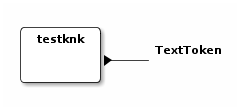
wordlebtk
| Adı | wordlebtk |
| İşlevi | Giriş kapısındaki grafik verisini wordle sayfasında etiket bulutu yaratmak için kullanılabilecek biçimde metin dosyasına yazar. |
| Giriş Kapısı | 1 |
| wordlebtk.inport1(token tipi: ChartData) | |
| Çıkış kapısı | yok |
Parametreleri:
| parametre | varsayılan değeri | açıklama | alabildiği değerler | önkoşulları |
|---|---|---|---|---|
| dosya | wordlebtk.txt |
Yazılmak istenen dosyanın yolu ve adı. |
Görsel gösterimi:

yazarlistesiknk
| Adı | yazarlistesiknk |
| İşlevi | hayvanknk veya biriknk bileşenini çok sayıdaki yazar ile kullanmaya yarar. Yazar listesi dosya ile ya da badi veya troll listesi olarak belirlenebilir. |
| Giriş Kapısı | yok |
| Çıkış kapısı | 1 |
| yazarlistesiknk.outport1(token tipi: Baslik) |
Parametreleri:
| parametre | varsayılan değeri | açıklama | alabildiği değerler | önkoşulları |
|---|---|---|---|---|
| gpy | 5 |
Yazar başına üretilen başlık sayısı | ||
| kip | HAYVANKNK |
Kullanılmak istenen bileşen. Bu bileşenin kabul ettiği parametreler de yazarlistesiknk ile verilebilir. | [hayvanknk, biriknk] | |
| yazar | yok |
Tek bir yazar için kullanılır. | dosyadanyazar is not set; liste is not set; | |
| liste | yok |
Yazarları belirleyen hazır liste. | [badi, troll] | yazar is not set; dosyadanyazar is not set; |
| dosyadanyazar | yok |
Yazar listesini içeren dosya. | yazar is not set; liste is not set; |
Önkoşulları:
- only one of the following should be true: yazar is set; dosyadanyazar is set; liste is set
Görsel gösterimi: